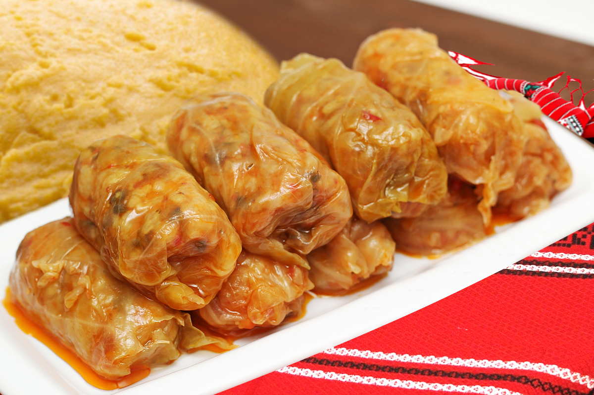

Sarma

Mein Lieblinsgericht Nummer 2
Dieses Gericht kann und werde ich niemals können.
Aber es schmeckt verdammt gut, vorallem auf "Rumänische" Art und Weise...
... oder besser gesagt, so wie es meine Mama macht!
Die Zutaten
- Keine Ahnung, ich weiß es wirklich nicht
- Ganz viel Fleisch und Kraut
Die Zubereitung
- Man nimmt das Fleisch und rollt es mit dem Krautblatt ein
- Den Rest müsste ich bei meiner Mum erfragen
Bon Appetit oder auf rumänisch "Pofta buna"